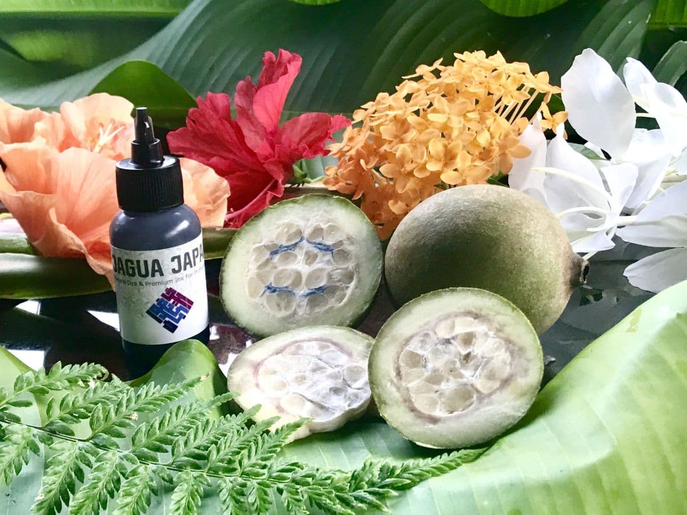

1.何でできているの？
ジャグアタトゥーとは、フルーツの果汁で肌を染めるボディーペイントです。
主成分のフルーツは「ゲニパアメリカーナやウィト(Huito)」と呼ばれる南米等で古くから生活に使われ愛されてきた果実です。
その他、通常は人体に使用して問題のある成分は含有せず、肌に使用できるようにメーカー様により多少の違いはありますが【ゲニパアメリカーナ】のエキスに配合した、植物が主成分の染料となっております。
ただし！！近年ジャグアタトゥーの普及に伴い、「雑貨」扱いの、成分も分からないようなインクも多数出回っているそうです。セルフジャグア等をされる時には、くれぐれもお気を付けください！
2.どうして染まるの？
染まる仕組み
ジャグアフルーツの果汁にはゲニピンと呼ばれる成分が入っています。
そのゲニピンが皮膚のたんぱく質やアミノ酸と反応して肌を染色します。
果実の発酵の過程でゲニピンが発生する為、過度の保存添加物等を使用していないインクは、温度管理や保存状態が非常に重要になります。
また施術箇所の角質の厚み・皮膚のコンディションは各自で異なり、インクとの相性や乾燥時間もあるので、描く時の条件次第で、色味や染まる濃度は異なります。
基本的には「濃紺」に染まります。
3.どうして消えるの？
消える仕組み
ジャグアタトゥーは、表皮の中の「角質」を染めています。
表皮は新陳代謝（ターンオーバー）により日々細胞が入れ替わっていくので、
染まった細胞も、約2～3週間かけていずれ剥がれ落ちていくことになります。
ターンオーバーって？
ターンオーバー（肌が生まれ変わるサイクル）はどういう仕組みかと言いますと
肌の細胞が約1ヶ月のサイクルで新しく生まれ変わる「肌の新陳代謝」のことです。古い皮膚がはがれ落ち、新しい皮膚に置き換わる自然なプロセスです。
実際のところ、「汗をかく頻度」や「肌の摩擦」など条件によりこれも人それぞれです。
ひとつだけ確かなことは、ジャグアタトゥーをしてみると、ご自身の代謝がどれくらいの周期なのかがなんとなく分かります。
そのため、代謝が悪いと3週間以上消えないこともあります。
ですが遅くても、いづれは消えるので…（皆より長く楽しめた♪）と思って、ご安心してお楽しみください！
4.どんなことに注意したらいい？
●アレルギーの確認
イチゴ・ピーナッツなど【バラ科・種子科・ナッツ類】のアレルギーはないか？
（上記アレルギー以外でもお肌の弱い方や、お肌に不安のある方は主治医に要確認）
●予定の確認
・好きなタイミングで消せる訳ではないので、公共施設等を使用する場合などは、利用できるか確認が必要でしょう。（ボディーペイントも刺青と同じ扱いを受ける場合があります。）
・発色するまで時間がかかるので、1番しっかり見せたい日の2～3日前に施術する。
●気持ちの確認
変身願望が叶うと（少なからず誰でも）少し気持ちが大きくなったり、誰かに見せたくなったりしますが、いらぬ喧嘩やトラブルにならないように注意しましょう。
まとめ
- ジャグアタトゥーは約2週間で消える、肌を染色するボディーアート
- 濃紺に染まる
- 完全に消えるまで２～３週間かかる
- 発色のピークは施術後２～３日。その後徐々に薄くなり消えていく。
- 描けないデザインはほぼ無いが、面積とインク使用量により価格が決まる場合が多いので、デザインはお財布とも相談。
- 描けないデザインはほぼ無いが、各アーティストにより得意なジャンルは異なる為、あらかじめ自分のイメージを描けそうなアーティスト、または好きな感じのアーティストを探す。